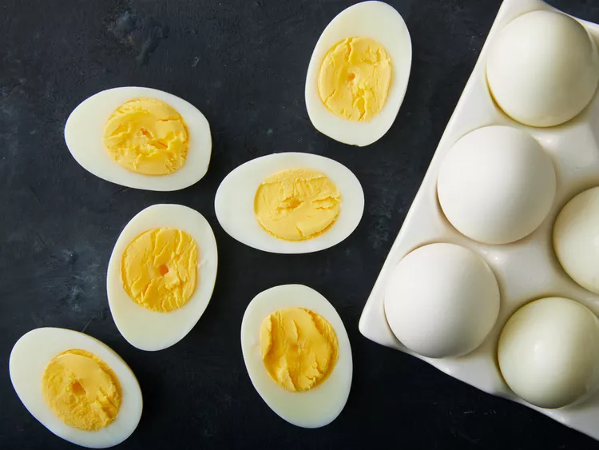

Perfect Hard-Boiled Egg

Description
This recipe provides a simple guide on how to make a perfect boiled hard egg.
It's very easy, so I hope you can follow this steps well. Before you start, make sure that you have everything prepared.
Ingredients
- 1 tablespoon salt
- ¼ cup distilled white vinegar
- 6 cups water
- 8 large eggs
Steps
- Gather all ingredients.
- Combine salt, vinegar, and water in a large pot, and bring to a boil over high heat.
- Add eggs one at a time, being careful not to crack them. Reduce the heat to a gentle boil, and cook for 14 minutes.
- Once eggs have cooked, remove them from the hot water, and place into a container of ice water or cold, running
water. Cool completely, about 15 minutes. Store in the refrigerator up to 1 week.
- Enjoy it!
Home